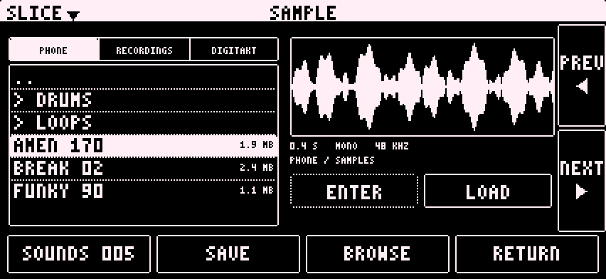

Browsers
Sound browser (SOUNDS)
Each part holds one Sound number from 1 to 127. A project has one Sound bank.
- Open a part's editor.
- Press SOUNDS nnn in the bottom bar.
- Tap a row to load that Sound into the part.
- Press PREV or NEXT, or drag the list, to see other rows. Seven rows show at a time.
- Press CLOSE to go back.

A new project starts with four Sounds: 1 SYNTHONE, 2 FM, 3 303, 4 GRANULAR. The rest are empty. An empty row shows INIT and loads an INIT sound on the part's current engine.
Save into a row:
- Press SAVE HERE on the row.
- On a filled row it asks SURE?. Press SURE? to overwrite.
Rename: tap the name under CLOSE. Type on the keyboard. Press DONE. A rename reaches the Sound bank only when you save.
A dot beside the name means the working sound has changed since it was loaded. A Sound that cannot be read shows SOUND N COULD NOT BE READ.
Preset browser (BROWSE)
Presets are per engine and shared by all projects. They are factory presets plus your own.
- In a part's editor, press BROWSE.
- Tap a preset to load it into the part. The part keeps its Sound number and shows as modified until you save.
- Press DONE to go back.

- SEARCH: type part of a name to filter the list.
- SAVE AS PRESET: type a name to store the working sound as your own preset.
- Long press a user preset to rename or delete it. Factory presets are read-only.
Presets and Sound bank entries are separate. SAVE AS PRESET writes a Preset. SAVE and SAVE HERE write the Sound bank.
Project browser
A project holds the Sound bank and 128 patterns. The app keeps your working state automatically. A saved project is a copy of it.
- Go to the setup page.
- Tap PROJECT: at the top right.
- Tap a project name to select it. The selected name has a > in front. OPEN marks the open project.
- Press SAVE to store the working state onto the selected project. It asks SURE?.
- Or press LOAD to replace the working state with the selected project. It asks SURE?. Unsaved changes are lost.
- Press DONE.

NEW PROJECT: press it, type a name and press Create. The new project holds the four starting Sounds. It does not change the working state. An existing name is refused. Three names show per page. Use NEXT for more.
Sample browser
The Sampler's SAMPLE page, and a KIT pad, open it.
- Pick a source tab: PHONE, RECORDINGS or DIGITAKT.
- Tap a row. A folder starts with >. Press ENTER to open it. Press .. then ENTER to go up.
- Tap a file to hear its waveform and info.
- Press LOAD.

- PHONE: the app's samples folder. The + IMPORT row at the top of the root opens iPhone Files and copies the file into the app.
- RECORDINGS: the audio recorder's takes.
- DIGITAKT: appears only when the connected device is a Digitakt and the transport is stopped. It is read-only. A sample is pulled into memory.
From a KIT pad, BACK returns to the pad.
A kit's 16 pad samples are saved with the sound.